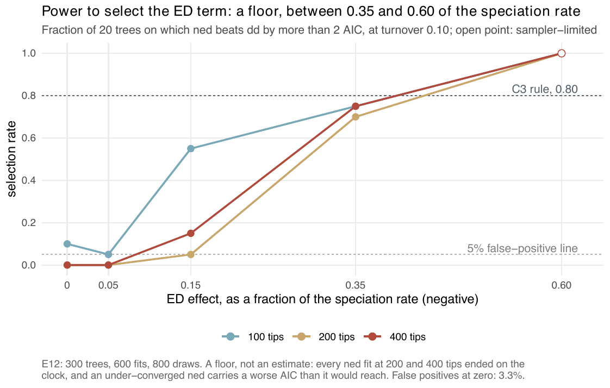
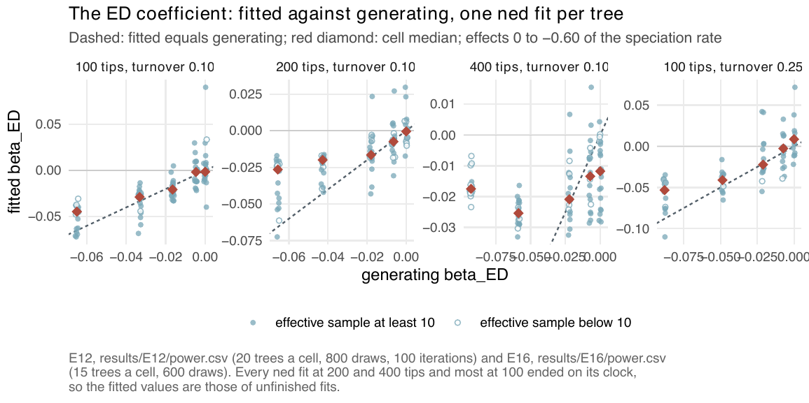

E12 — Where does the ED term become selectable?
| Status | complete (E12: 300 trees, 297 fitted; E12b: 30 trees); superseded by E46 (recovery) and E47 (selection, on an effect grid, since E46 runs only ±0.35) when they report (Estimability) |
| Package build | library e8, installed at 4f42b27 on 2026-09-20 (results/E12/LAUNCH.md); the build audit found that library identical to a clean build except ned on the thinning proposal |
| Driver / analysis | sim/E12-power.R; figures fig-power and fig-s-ned-recovery |
| Data | results/E12/power.csv (300 rows), results/E12b/power.csv (30 rows) |
Question
E8 found \(\beta_{ED}\) estimable and AIC unwilling to select ned over dd, at one effect size (-0.15\(\lambda\)) and one tree size. That was being stated as a boundary, but it is one point. E12 sweeps effect and size to find where selection starts to work, which turns a negative result into a statement about where the method has power.
Design
| parameter | value | meaning |
|---|---|---|
| generator | ned, linear link |
\(\lambda_s = \beta_0 + \beta_N N + \beta_{ED}\,\mathrm{ED}_s\) |
| ED effect | 0, -0.05, -0.15, -0.35, -0.60 \(\lambda\) | \(\beta_{ED}\) as a fraction of \(\beta_0 = 0.5\) at one clade-mean unit of ED |
| tips | 100, 200, 400 | \(K\) calibrated per cell to the target; crown 15 |
| turnover | 0.10 | fixed by E7: at 0.25 the strong cells fall below ESS 10 by 50 tips |
| trees per cell | 20 | 15 cells, 300 trees |
| candidates | dd and ned only |
the question is whether the ED term pays for its two parameters |
| draws | 800 | a 100-draw pilot left ESS 1.2-6.6 in the strong cells |
| iterations | max_iter 100 |
|
| clock | 3600 s as launched (the driver default; E12b 14400 s), not recorded in the CSV | |
| proposal, box | surrogate; sim/box.R |
Generating \(\beta_{ED}\) per cell (raw units): -0.06/-0.03/-0.02/-0.005 at 100 tips; -0.07/-0.04/-0.02/-0.01 at 200; -0.09/-0.06/-0.02/-0.01 at 400 (-0.60 to -0.05\(\lambda\)). At 400 tips and -0.60\(\lambda\) the capacity sits at the search ceiling (≈ 10000) and 3 of 20 trees could not be drawn ("no ned tree in [240, 640] tips in 400 attempts"); the 17 drawn have a median of 267 tips.
Pre-set rule
Per cell, the fraction of trees with \(\mathrm{AIC}_{dd} - \mathrm{AIC}_{ned} > 2\). The deliverable is the contour where that fraction reaches 0.8 (the selection threshold of E2's rule) and the false-positive rate at effect 0, which must be \(\le 5\%\) for the curve to mean anything. Any cell whose median effective sample is below 10 is reported with its selection rate but excluded from the contour, marked sampler-limited. A cell that produces no trees is reported as a cell with no answer, not dropped.
Results
Selection (share of trees with \(\Delta\)AIC > 2):
| tips | 0 (FP) | -0.05\(\lambda\) | -0.15\(\lambda\) | -0.35\(\lambda\) | -0.60\(\lambda\) |
|---|---|---|---|---|---|
| 100 | 0.10 | 0.05 | 0.55 | 0.75 | 1.00 |
| 200 | 0.00 | 0.00 | 0.05 | 0.70 | 1.00 |
| 400 | 0.00 | 0.00 | 0.15 | 0.75 | 1.00 (17 trees, sampler-limited) |
False positives over the 60 null trees: 2 of 60 = 3.3%, within the 5% ceiling (2 of 20 at 100 tips).
Recovery of \(\beta_{ED}\) (median fitted/generating; right-sign share; median ESS of 800; fits with ESS < 10; stops converged/cap/clock):
| tips | -0.60\(\lambda\) | -0.35\(\lambda\) | -0.15\(\lambda\) | -0.05\(\lambda\) | 0 (median \(\hat\beta\)) |
|---|---|---|---|---|---|
| 100 | 0.69; 1.00; 24.9; 4; 0/2/18 | 0.865; 1.00; 61.5; 3; 0/5/15 | 1.25; 0.95; 83.8; 0; 1/5/14 | 0.34; 0.60; 131.9; 0; 0/8/12 | -0.0013; 133.9; 1; 1/12/7 |
| 200 | 0.40; 1.00; 20.9; 5; 0/0/20 | 0.47; 1.00; 31.8; 5; 0/0/20 | 0.92; 0.95; 24.8; 6; 0/0/20 | 1.14; 0.80; 18.9; 7; 0/0/20 | -0.0005; 20.0; 6; 0/0/20 |
| 400 | 0.19; 1.00; 4.6; 14 of 17; 0/0/17 (sampler-limited) | 0.43; 1.00; 27.8; 3; 0/0/20 | 0.94; 0.95; 51.2; 5; 0/0/20 | 1.87; 0.90; 24.7; 5; 0/0/20 | -0.012; 32.8; 4; 0/0/20 |
Every ned fit at 200 and 400 tips ended on its clock (120 of 120 at an effect, and every null fit); at 100 tips 35% to 90% did. Clock-limited: by the convention adopted later (clock ending more than a tenth of the fits), every cell of E12 is clock-limited, so every rate here is a floor. The supplement rounds 0.865 to 0.87; the figure prints 0.86.

ned over dd by effect size, one line per tree size. All three sizes cross 0.80 between -0.35\(\lambda\) (0.70-0.75) and -0.60\(\lambda\) (1.00); the open point at 400 tips, -0.60\(\lambda\), is sampler-limited and excluded from the contour.
E12b — the -0.35\(\lambda\) row with 300 iterations
results/E12b/power.csv: E12's design at -0.35\(\lambda\) only, 10 trees a size, 600 draws, max_iter 300, traces saved (no design entry of its own).
| tips | selection | ratio | sign | median ESS of 600 | fits < 10 | stops conv/cap/clock |
|---|---|---|---|---|---|---|
| 100 | 0.80 | 0.96 | 1.00 | 26.4 | 1 | 0/5/5 |
| 200 | 0.90 (sampler-limited) | 0.67 | 1.00 | 6.1 | 6 | 0/0/10 |
| 400 | 0.80 | 0.72 | 1.00 | 10.7 | 5 | 0/0/10 |
No E12b fit met the stopping rule. The supplement's "half the fits finished" at 100 tips means 5 of 10 reached the 300-iteration cap. A sentence in methods-study.tex and paper.tex ("where the fit is allowed to finish (a median 262 iterations at -0.35\(\lambda\)) it returns at 0.97 of its value") has no source among E12b's files: power.csv has no iteration column, and its 100-tip ratio is 0.96 with no fit converged.
Conclusion
By E12's rule the 0.80 contour lies between -0.35\(\lambda\) and -0.60\(\lambda\) at every size (0.70-0.75 at -0.35\(\lambda\), 1.00 at -0.60\(\lambda\)), with false positives at 3.3%; the 400-tip -0.60\(\lambda\) cell is excluded. Every rate is a floor: no fit at 200 or 400 tips finished, and an unfinished ned carries a worse AIC than it would reach. With 300 iterations (E12b) -0.35\(\lambda\) reaches 0.80 at 100 and 400 tips (the 200-tip cell, 0.90, is sampler-limited). The coefficient keeps its sign (≥ 0.95 at |effect| ≥ 0.15 at every size) while its size is attenuated on unfinished fits — 0.69, 0.40 and 0.19 of the value at -0.60\(\lambda\) from 100 to 400 tips — and comes back toward its value with more iterations (0.96, 0.67, 0.72 at -0.35\(\lambda\) in E12b against 0.865, 0.47, 0.43). E12 does not measure turnover above 0.10 (E16 does 0.25), sampling below 1, or a fit that converged.
Its trees come from linear-link ned generators and the raw-ED simulator before f30a791, whose effect on these generators is not recorded, and its fits are unconditioned and unfinished; E46 measures recovery under the conditioned likelihood and E47 selection on a grid of effects (Estimability).
Related
- E8 — the single point (-0.15\(\lambda\), 100 tips, turnover 0.25) that E12 extends.
- E16 — the same grid at turnover 0.25, where the real clades sit.
- E18 — whether centring ED lifts the -0.15\(\lambda\) selection rate.
- E15 — the cost of one
nediteration at E12's -0.35\(\lambda\) design (77 s, 78 min, 5.1 h at 100, 200, 400 tips). - E29 —
nedat 200 tips on fits allowed to finish.